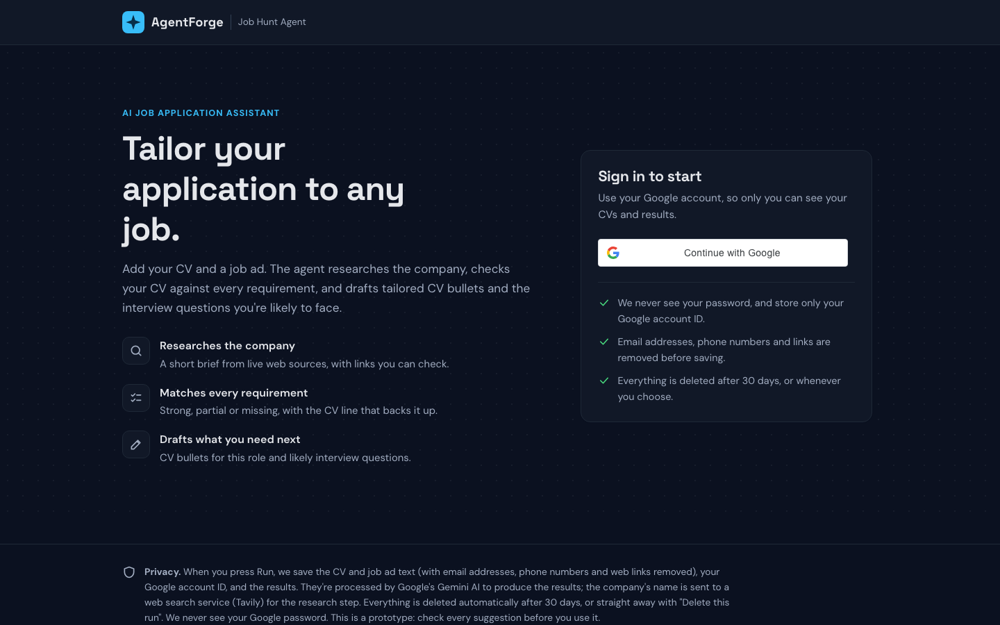
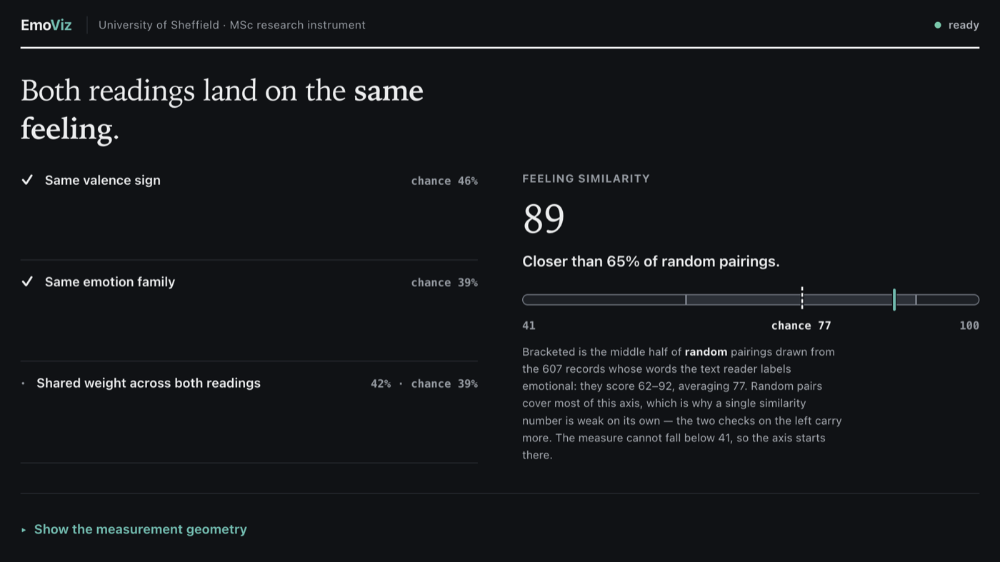
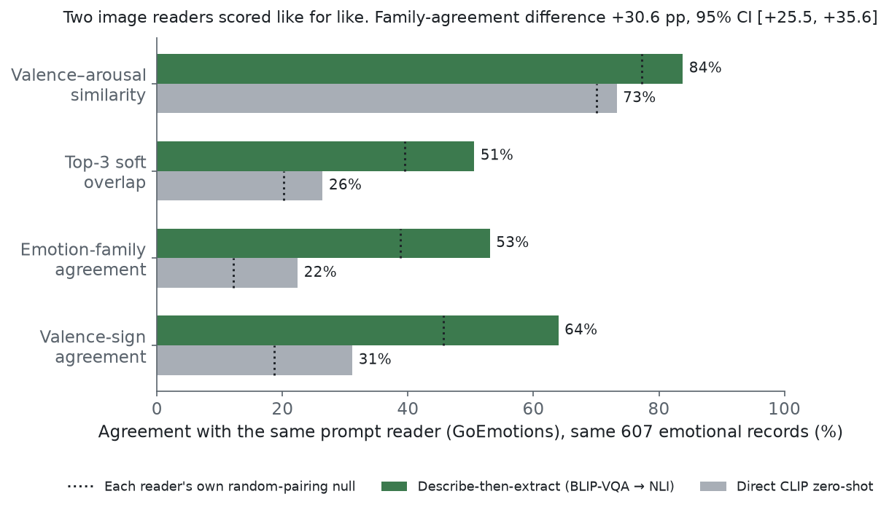

MSc Artificial Intelligence, University of Sheffield (Sep 2026), and AI Engineer Intern at
NexCell Solutions, where I ship a production WhatsApp AI agent that books property viewings
through MCP tools. In my own time I built AgentForge, a
job-hunt agent now live on Google Kubernetes Engine, with crash recovery, evals and 128 automated
tests, solo in two weeks. I'm also first author of a peer-reviewed IEEE paper (CCPIS 2025).
Keywords — AI agents · LangGraph & LangChain · production backends · Kubernetes on GCP · evals & guardrails · model evaluation · NLP
25% ↓ false-positive alerts◆+38% relative F1 on extractive QA◆100,000+ records/week — Hamiltonian, 2024◆AgentForge — live on GKE, 15/15 evals◆128 automated tests◆600+ production commits — NexCell◆98.2% speaking-speed accuracy◆40% ↓ model evaluation time◆IEEE CCPIS 2025 — peer-reviewed◆sub-second edge inference on Raspberry Pi◆World Space Week 2023 — 1st place, ISRO SDSC SHAR◆Smart India Hackathon finalist◆
§01
Introduction
Most machine-learning projects die in a notebook. Mine are built to leave it.
I'm Shre Hari, and I've just finished an MSc in Artificial Intelligence at the University of Sheffield.
What I care about is the unglamorous gap between a promising model and a system people actually rely on.
At NexCell Solutions I work on the live side of that gap: a WhatsApp AI agent that talks to real
customers and can only act through tools that are tested, idempotent and logged with care. Before that I
built production backends at Hamiltonian Systems that moved 100,000+ records a week, and I'm first
author of a peer-reviewed IEEE paper on real-time disease monitoring (CCPIS 2025).
In October I gave myself two weeks to build an agent the way production systems are built, and shipped
AgentForge to Google Kubernetes Engine. The prompts took an afternoon. The
queue, checkpoints, leases, sweeper, graceful shutdown and evals took the rest, and that's the part I'm
proudest of.
My favourite results rarely come from swapping in a bigger model. They come from
structured error analysis: finding that boundary truncation, not model capacity, was
throttling an extractive QA system (F1 0.50 to 0.69), or that describing an image before scoring it beat
asking CLIP directly by 30 points. Diagnosis before replacement. Evidence before opinion. Available
immediately, full-time.
§02
Apparatus & Method
The instruments on my bench — each one used in anger, not just listed.
A. LANGUAGES
Python (primary — every experiment below)
SQL — PostgreSQL · MySQL
Java
C
Bash
B. DATA & ML LIBRARIES
PyTorch
TensorFlow / Keras
Scikit-learn
JAX
Pandas · NumPy
OpenCV
Matplotlib · Seaborn
C. NLP & TRANSFORMERS
HuggingFace Transformers
RoBERTa
Extractive QA
Sentiment Analysis
Text Chunking & Retrieval
NLTK
D. ML TECHNIQUES
CNNs
SVMs
Autoencoders
K-Means · PCA · t-SNE
ARIMA Forecasting
Anomaly Detection
Feature Engineering
Hyperparameter Tuning
E. MODEL EVALUATION
Cross-validation
F1 · Precision · Recall
AUC-ROC
Confusion Matrices
Adjusted Rand Index
Confidence Intervals
F. BACKEND & APIS
FastAPI
Flask
REST design
Pydantic
JWT Auth
SQLModel · SQLAlchemy (async)
Microservices
G. INFRASTRUCTURE
Docker
Git / GitHub
Linux (Ubuntu)
AWS — EC2 · SES · SNS
CI/CD
Grafana
Structured logging
H. PRACTICE
Agile / Scrum
Sprint planning
Technical documentation
Stakeholder communication
Root-cause analysis
I. LLMS & AGENTS
LLM APIs — OpenAI · Gemini · Claude
Tool use & function calling
MCP servers
Structured outputs
LangGraph · LangChain · Deep Agents
Evals & LLM judges
RAG & vector search
Embeddings
Prompt & context engineering
J. PLATFORM & CLOUD
Kubernetes — GKE Autopilot
Cloud SQL · Pub/Sub · Secret Manager
Workload Identity
Celery · Redis
PostgreSQL · Alembic
Docker multi-stage images
Zero-downtime rolling deploys
§03
Experiments
Eleven systems. Every claim below shipped with a number attached, and the code is public where I'm allowed to share it.
EXP.11OCT 2026LIVE ON GKE
AgentForge — a production AI agent, built solo in two weeks
A job-hunt agent. Sign in with Google, add a CV and a job ad, and it researches the
company with live web search, rates the CV against every requirement
(strong, partial or missing, with the CV line that backs it up), then drafts tailored CV bullets
and the interview questions you're likely to face. It is the first agent on a low-code agent
platform, and it's built to production standards rather than as a demo.
The hard part isn't the prompt. It's what happens when things go wrong: every run is queued on
Pub/Sub, every step is checkpointed in Postgres, a crashed run picks up where it stopped, the one
side effect can never happen twice, and a sweeper re-queues runs whose worker died. On shutdown,
workers stop between steps and hand the run back, so a rolling deploy drops nothing.
15/15EVAL CASES · CLEAN, MESSY & INJECTION · PASSED ON TWO RUNS
128AUTOMATED TESTS ON THEIR OWN DATABASE
2weeksSOLO, FIRST COMMIT TO LIVE · 39 COMMITS

Fig. 3.10a — The live app, captured 26 Oct 2026. Emails, phone numbers and links are stripped before anything is saved, and every run deletes itself after 30 days.
Fig. 3.10b — One image, three jobs: api, worker and sweeper are the same tested image with different start commands. GKE Autopilot, London.
Baseline0/6
Draft prompt v23/6
Match prompt v25/6
Draft prompt v36/6
Grown to 12 cases12/12
15 cases · run 115/15
15 cases · run 215/15
Research, baseline2/4
Research prompt v24/4
Fig. 3.10c — Evals, not vibes. One prompt change per commit, every report saved with its git commit and model. The baseline invented impact in every CV bullet; v2 banned it.
WORKFLOWFive LangGraph steps (validate → research → match → draft → save) with a Postgres checkpoint after each. Crash and resume tested with a real process kill.
RESEARCHA Deep Agents step with Tavily search, a 3-search cap enforced in code, today's date in the prompt, and invented URLs dropped.
QUEUEWorkers claim runs with a race-safe lease and ack only after saving. Retries only on 429s, 5xx and timeouts; poison runs fail after 3 tries.
PLATFORMGKE Autopilot, Cloud SQL through the Auth Proxy as a native sidecar, Workload Identity, Secret Manager, readiness and liveness probes, rolling deploys.
SAFETYGoogle ID token checked on every request, 10 runs per user an hour, PII redaction before the AI sees anything, delete-this-run, 30-day auto-delete.
Fig. 3.10 — Still on the list, and marked that way in the README: a 1,000-user load test, CI before each deploy, and scaling workers on queue backlog.
EXP.082026MSC DISSERTATION · SUBMITTED SEP 2026
Visualising Emotion — Can a Text-to-Image Model Draw a Feeling?
At Sheffield's Festival of the Mind 2024, members of the public typed how they felt and DALL·E drew
each entry as a black-and-white line drawing. I built the pipeline that asks whether the drawing
carries the feeling back, across 1,012 records. BLIP-VQA is never asked for an
emotion, only five factual questions per drawing; BART-MNLI reads the emotion from that description;
GoEmotions reads the words. Every score is tested against a 300-shuffle random-pairing null, with
clustered-bootstrap intervals and Holm-Bonferroni across 36 comparisons.
⤷ Valence-sign agreement 64.0% against a 45.6% null (z +11.1). Describe-then-extract beat direct CLIP by 30.6 points. A blind 120-drawing check put the face rule's precision at 42.2%, reported rather than buried. · source
PyTorch
BLIP-VQA
BART-MNLI
GoEmotions
CLIP
Permutation testing
Flask demo
64.0%VALENCE AGREEMENT · CHANCE 45.6%
74% vs 43%FACES vs SCENES MATCHING PROMPT EMOTION

Fig. 3.0a — EmoViz, the Flask demonstrator: runs the live models on any drawing and shows each score beside its chance band.

Fig. 3.0b — Same 607 emotional records, two image readers. Describing first wins on every measure.
Fig. 3.0 — A model can draw a feeling on a face. Landscapes keep their secrets.
EXP.012025IEEE · FIRST AUTHOR
Real-Time Disease Monitoring & Alert System
A public-health system that predicts disease-prone areas and warns people nearby. My part was the
machine-learning pipeline: cleaning the health data, Random Forest and Logistic Regression risk
classifiers, ARIMA trend forecasts, and the link to geospatial risk zones. Combining model predictions
with rule-based checks cut false alerts by about 25%, and people inside a 400-metre
red zone get an SMS warning.
⤷ Published at the 2025 2nd International Conference on Circuits, Power and Intelligent Systems (CCPIS), on IEEE Xplore — first author, ref. [1].
Random Forest
Logistic Regression
ARIMA
Geospatial alerts
25%↓ FALSE ALERTS · ML + RULE-BASED CHECKS
400mRED-ZONE RADIUS FOR SMS WARNINGS
Fig. 3.1 — An alert nobody trusts is worse than no alert. Fewer false alarms was the goal.
EXP.022025
Extractive Document QA System
End-to-end QA pipeline on roberta-base-squad2: 300-word overlapping chunks and a custom
composite score blending model confidence, span-length reward and position-aware penalties. The win
came from error analysis, not model swaps — intra-sentence boundary truncation was the
primary failure mode.
0.50 → 0.69TEST-SET F1 (+38% REL.)
HuggingFace
RoBERTa
NLP
Fig. 3.2 — Diagnose before you replace.
EXP.032025
Speech Rate Classification System
Task-specific handcrafted features over log-mel filterbank energies — 128-dim spectral statistics for
speed, 256-dim temporal deltas for tempo — matched to each task's acoustic physics. SVM with RBF
kernel, 3-fold grid-search CV.
98.2%SPEAKING-SPEED ACCURACY · kNN BASELINE 24.6%
SVM
Signal Processing
Audio DSP
Fig. 3.3 — Features engineered from first principles beat brute force ×4.
EXP.042025
Medical Image Clustering — BloodMNIST
Compressed 12,288-feature blood-cell images to 32 dimensions two ways: PCA versus a convolutional
autoencoder (MSE loss converging to 0.005 over 40 epochs). K-Means (k=8) over the learned latent
space, validated with t-SNE structure plots across all 8 cell categories.
ARI 0.40AUTOENCODER vs 0.26 FOR PCA
Autoencoders
K-Means
t-SNE
Fig. 3.4 — Learned geometry separates what variance alone cannot.
EXP.052024
Time-Series Forecasting & Automated Pipeline
Modular Python pipeline automating ingestion → preprocessing → ARIMA modelling → PDF report
generation for agricultural market stakeholders, eliminating manual report assembly. A
reusable parallel experimentation framework produced explainable multi-year forecasts with annotated
confidence intervals.
40%↓ MODEL EVALUATION TIME
ARIMA
Scikit-learn
Automation
Fig. 3.5 — The best report is the one nobody had to write.
EXP.062025
UK Energy Grid — EDA & Visualisation
Analysed the UK's 2024 national electricity generation across six sources — solar, wind, gas,
nuclear, hydro, other — via time-series decomposition and correlation analysis. Surfaced seasonal
demand patterns and a statistically significant negative correlation between solar and wind
output during summer peak hours.
6sourcesGENERATION SOURCES · FULL-YEAR 2024
Pandas
Seaborn
Data Storytelling
Fig. 3.6 — Complex grid dynamics, readable by non-specialists.
EXP.072023SIH FINALIST
Edge-Based Fish Disease Detection
CNN classification pipeline trained on 2,000+ labelled images; F1 raised 12% through iterative
hyperparameter tuning and augmentation, then quantised and deployed on a Raspberry Pi. A national
finalist at the Smart India Hackathon 2023.
<1secON-DEVICE INFERENCE LATENCY
CNN
Edge AI
Quantisation
Fig. 3.7 — Real AI fits in a fisherman's pocket.
EXP.092025
RAG-Enabled Housing Insight Chatbot
End-to-end retrieval-augmented generation over property data: LangChain pipeline with
embedding-based semantic search, cosine-similarity ranking and modular prompt templates, served
behind a FastAPI endpoint with logging and hit-rate tracking — a reproducible base for
evaluating agent quality.
>85%TOP-3 RETRIEVAL · 500+ CHUNKS INDEXED
LangChain
Vector Search
FastAPI
Fig. 3.8 — Retrieval you can measure beats generation you can only admire.
EXP.102026LIVE DEMO
Aria — Voice-Driven Agentic Hotel Receptionist
A voice receptionist running a hand-written agent loop — no framework — where
the LLM can only act on the world through a real MCP server: availability,
room search, booking, cancellation, FAQ. Every tool call surfaces in the UI as it happens, so
you can watch the agent think. FastAPI · Web Speech API · SQLite · Docker, deployed live.
5toolsMCP TOOLS BEHIND A LIVE AGENT LOOP
Agentic Loop
MCP
Voice UI
Fig. 3.9 — Talk to her live (free tier: the first visit takes about 40 seconds to wake) · source. Built and deployed in 2 days. The LLM never touches the database.
Built and shipped a production WhatsApp AI agent on GPT-4.1 that acts only through MCP tools: qualifying leads, booking and rescheduling property viewings, and handing chats to staff.
[✓]
Developed event-driven lead intake on AWS SES and SNS, with signature verification, phone-number deduplication, a review queue and retries.
[✓]
Implemented idempotent scheduled reminders across Celery and Redis workers, rolling back failed writes so no client is ever messaged twice.
[✓]
Enforced GDPR erasure, retention and do-not-contact rules, AI disclosure, consent and STOP opt-outs on every chat, and kept client numbers and message text out of the logs.
[✓]
600+ commits, 199 test files and 6 Alembic migrations, merged through CI and code review, plus Next.js and TypeScript CRM screens across 38 frontend commits.
[✓]
Demo every release to the non-technical founders: what was built, what it does, what it costs to run, then the full flow live. Wrote onboarding guides and reviewed pull requests for a newly joined intern.
Fig. 4.1 — An LLM talks to the customer. My job: it can only act through tools that never double-book. Work under NDA, so patterns only.
Software Engineer Intern
Hamiltonian Systems — Coimbatore, India
JUN — JUL 2024
[✓]
Engineered Python backend services processing 100,000+ structured records weekly with validated data integrity (Pydantic schemas) across three live, client-facing web applications.
[✓]
Shipped 6+ production REST APIs — JWT authentication, Pydantic validation, structured error-handling middleware — unlocking new cross-system integrations.
[✓]
Tuned 8+ PostgreSQL and MySQL schemas with targeted indexes on the slowest queries behind high-traffic endpoints.
[✓]
Mined 50,000+ production log entries via automated Python scripts, resolving 15+ recurring system failures; provisioned Grafana dashboards that cut mean time-to-resolution.
[✓]
Worked in 2-week Agile sprints: estimation, backlog refinement, peer code review and iterative release validation, with 30+ unit and regression tests.
Fig. 4.2 — Production users are the harshest reviewers. My systems kept them online.
Anna University — Dr NGP Institute of Technology, India
NOV 2021 — APR 2025 · CGPA 7.89/10
Data Structures & Algorithms
Operating Systems
Databases
Computer Networks
APPENDIX A — CERTIFICATIONS
Claude Code 101: From Prompt to ProductLINKEDIN · 2026
Prompt Engineering for Large Language ModelsCOURSERA / BE10X
Advanced Business Analytics & Monitoring with GrafanaDR NGP INST. OF TECHNOLOGY
AI & Cybersecurity: Anomaly Detection & Secure SystemsDR NGP INST. OF TECHNOLOGY
Web Development — HTML, CSS, JS, Backend IntegrationIIT MADRAS
§06
Recognition & Service
HONOURS
★
World Space Week 2023 — 1st Place, English Extempore Satish Dhawan Space Centre SHAR, ISRO — Sriharikota
★
Smart India Hackathon — National Finalist (2023) Edge-AI fish disease detection, deployed on Raspberry Pi
◆
Professional memberships Indian Society for Technical Education (ISTE) · Computer Society of India (CSI)
LEADERSHIP & VOLUNTEERING
▸
Engineering team lead — 4 members Assigned workstreams, tracked milestones, zero missed deadlines
▸
Elected Class Representative — cohort of 60+ Primary liaison between faculty and peers for academic planning
▸
UNICEF outreach campaign lead 250+ participants across a UNICEF fundraising campaign · 3 community aid camps · 2 blood-donation drives · 5 technical sessions incl. a TED-style talk
§07
AI-Native Workflow
I don't just study AI. I work inside it, daily.
The best engineers of this decade will treat AI as a collaborator whose work still gets reviewed —
accelerated by it, never blindly trusting it. I build agentic systems (AgentForge runs on LangGraph
with evals gating every prompt change; Aria runs a hand-written agent loop over MCP) and work inside AI
tooling the rest of the time. My daily stack:
Claude & Claude CodePAIR-PROGRAMMING · CODE REVIEW · THIS VERY SITE
Gemini via LangChainAGENTFORGE'S MODEL · LLM JUDGE FOR EVALS
HuggingFace HubMODEL SELECTION · PRETRAINED READERS FOR RESEARCH
[1] P. Shre Hari, L. Srinivasan, M. Shyam Sankar, V. Suresh and S. R. Ramya, “Real Time Disease Monitoring and Alert System for Public Health Safety,” in Proc. 2nd Int. Conf. on Circuits, Power and Intelligent Systems (CCPIS), 2025.
CITE THIS HUMAN
@misc{anandh2026portfolio,
author = {Anandh, Shre Hari Prem},
title = {Learning Systems That Ship: Portfolio of an {MSc} {AI} Graduate},
year = {2026},
howpublished = {\url{https://shrehari.github.io/}},
note = {First author, IEEE CCPIS 2025. Ships agents to production. Replies quickly.}
}